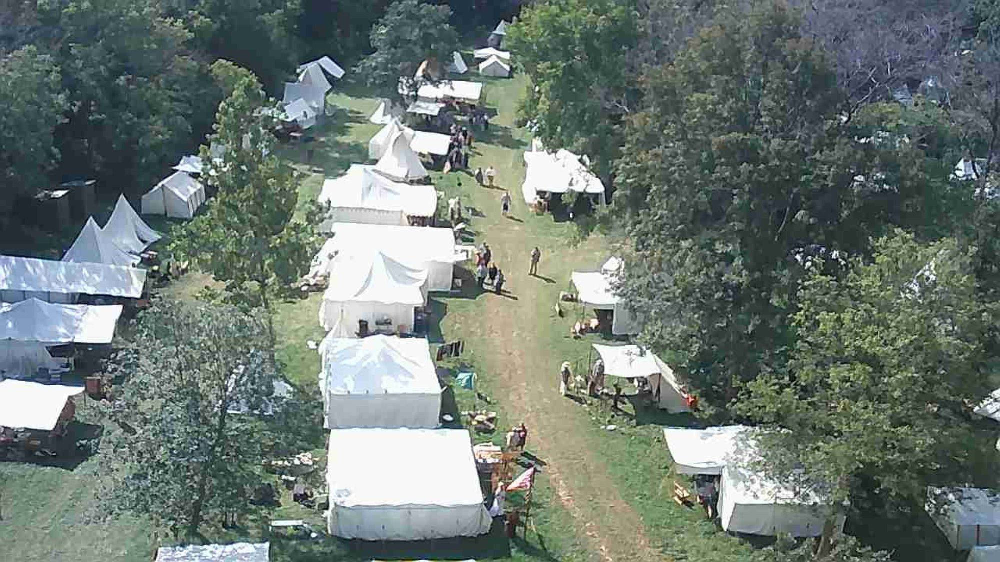

Blackpowder Rendevous
What does Blackpowder mean literally? Gunpowder, also commonly known as black powder to distinguish it from modern smokeless powder, is the earliest known chemical explosive. It consists of a mixture of sulfur, carbon and potassium nitrate. The sulfur and carbon act as fuels while the saltpeter is an oxidizer.  What does rendezvous mean literally? Borrowed from French rendez-vous (“appointment”), noun derived from second person plural imperative of se rendre (“to go to”), literally, “[you (imperative)] go to, get yourself to [a place]”.